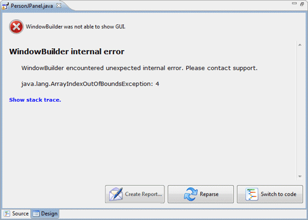
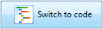
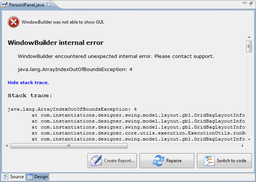
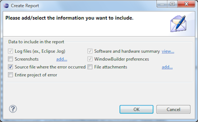
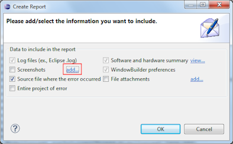
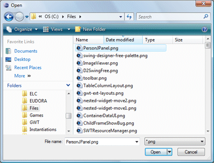
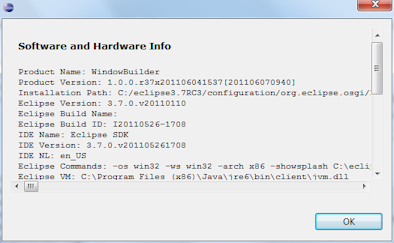
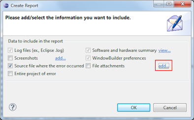
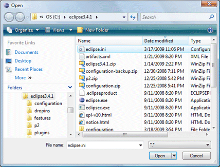
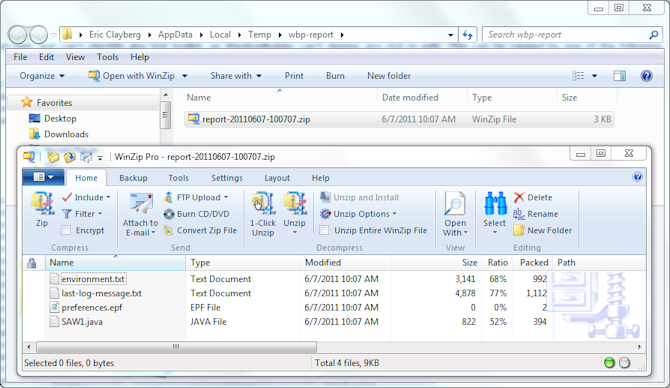

Error Reporting
When something unexpected happens (such as an exception being thrown) while trying to parse a user interface class or perform a design view operation, the editor will display the following error page:
 |
The Create Report button opens up an error reporting dialog that will create a bug report that you can submit to the bug tracking system along with all the needed supporting details. The Reparse button will cause the current class to be reparsed.
The Switch to code button will switch the editor back to the Source view.  |
Clicking the Show stack trace link will reveal the captured stack trace. Clicking the link a second time will hide the stack trace.

Create Report Dialog
Clicking the Create Report button will open the Create Report Dialog:
 |
The dialog contains several fields for entering information about the problem and several options for attaching important support info:
Clicking the OK button will generate a ZIP file that should be manually submitted to the WindowBuilder discussions or bug tracking system (GitHub Issues). |
Screenshots
Click on the Screenshots add.. link to attach additional screenshots to the case.
 
Software and hardware summary
Click on the Software and hardware summary view.. link to see the software and hardware info that will be sent along with the case.

File attachments
Click on the File attachments add.. link to attach additional files to the case (such as your eclipse.ini file).
 
Manually submit to discussions or bug tracking system
A ZIP file that includes all of the case data (including any images and files) is created and should be posted to the WindowBuilder discussions or bug tracking system (GitHub Issues).
